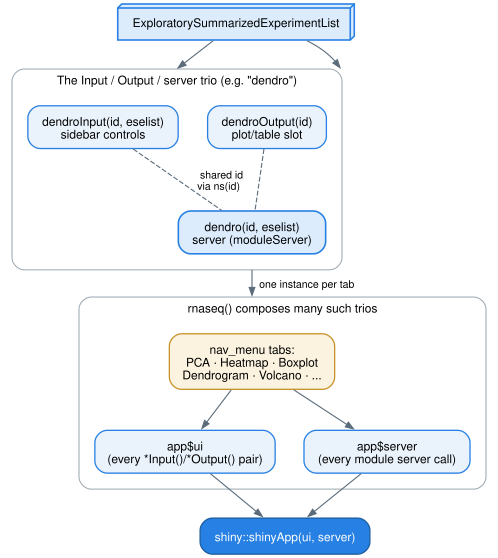

Developer guide: how modules work and how to add one
Source:vignettes/articles/developer.Rmd
developer.RmdThis article is for people extending shinyngs, not just using it. It describes the Shiny module convention the package is built on, how a module obtains its data, the split between a module and its standalone plotting function, and a step-by-step walkthrough for adding a new module. Code chunks are illustrative and are not evaluated when this article is built.
The big picture
shinyngs visualises data held in
ExploratorySummarizedExperiment objects (a
SummarizedExperiment with a few extra descriptive slots),
grouped into an ExploratorySummarizedExperimentList (an
eselist) that represents a whole study. Almost every
feature of the app is a Shiny module: a self-contained,
namespaced unit of UI plus server logic that can be reused anywhere
without its inputs and outputs colliding with another instance.
Top-level apps such as rnaseq are assembled from many of
these modules.

The Input / Output / server trio
The core convention: each module xxx is defined by three
functions, usually all living in R/xxx.R.
-
xxxInput(id, eselist)returns the UI controls (the sidebar form elements). -
xxxOutput(id)returns the UI that displays results (typically a plot or table output slot). -
xxx(id, eselist)is the server function. It is called directly with the sameidand wraps its logic inshiny::moduleServer().
The dendro module is a compact example.
dendroInput() builds the clustering controls,
dendroOutput() returns the plot slot, and
dendro() is the server:
dendroInput <- function(id, eselist) {
ns <- NS(id)
expression_filters <- selectmatrixInput(ns("dendro"), eselist)
dendro_filters <- list(
selectInput(ns("corMethod"), "Correlation method", c(Pearson = "pearson", ...)),
selectInput(ns("clusterMethod"), "Clustering method", c(...)),
groupbyInput(ns("dendro"))
)
fieldSets(ns("fieldset"), list(clustering = dendro_filters, expression = expression_filters))
}
dendroOutput <- function(id) {
ns <- NS(id)
moduleMain(
"Sample clustering dendrogram",
shinycssloaders::withSpinner(plotlyOutput(ns("sampleDendroPlot"), height = "480px"), color = shinyngsSpinnerColor()),
help = modalInput(ns(dendro_modal$id), "help", "help")
)
}
dendro <- function(id, eselist) {
moduleServer(id, function(input, output, session) {
modalServer(dendro_modal$id, dendro_modal$title)
selectmatrix_reactives <- selectmatrix("dendro", eselist, select_genes = TRUE, var_n = 1000, ...)
groupby_reactives <- groupby("dendro", eselist = eselist, group_label = "Color by", selectColData = selectmatrix_reactives$selectColData)
# ... build the plot from those reactives, render to output$sampleDendroPlot
})
}Note the shape:
- Namespacing is explicit. UI functions call
ns <- NS(id)and wrap every id inns(...); the server callsmoduleServer(id, ...)and Shiny handles the namespace from there. - The Input and Output functions must agree with the server on the
inner ids (
"dendro","sampleDendroPlot"), because that is how the three halves find each other. - Modules compose.
dendroInput()embedsselectmatrixInput()andgroupbyInput();dendro()embeds the matchingselectmatrix()andgroupby()servers.
Convention for reactive arguments
Where a module passes a reactive to another function, the parameter
name is prefixed with get (getTitle,
getPalette, getColorby,
getNumberCategories). This distinguishes a reactive from a
plain value of the same concept (for example the colorby
column-name string a plotting function takes). Keep those distinct:
don’t let the same name mean “a reactive” in one layer and “a plain
value” in another.
How a module gets its data: selectmatrix
Most modules don’t read the eselist directly. Instead
they delegate data selection to the selectmatrix module,
which is the compositional core of the package.
selectmatrixInput() supplies controls to choose:
- which
ExploratorySummarizedExperimentin the list to use, - which assay of that experiment,
- which rows (via the
geneselectsubmodule) and columns (viasampleselect).
The selectmatrix() server parses those inputs and
returns a named list of reactives that downstream modules consume. The
most-used ones:
selectmatrix_reactives <- selectmatrix("myMatrix", eselist, select_genes = TRUE)
selectmatrix_reactives$selectMatrix() # the selected (row/col-filtered) matrix
selectmatrix_reactives$selectColData() # colData for the selected samples
selectmatrix_reactives$getExperiment() # the chosen ExploratorySummarizedExperiment
selectmatrix_reactives$getAssayMeasure() # assay label, e.g. for axis titles
selectmatrix_reactives$matrixTitle() # a human-readable title for the selectiongroupby is the other module you’ll almost always compose
in: it provides the “colour by” control (embedding the
colormaker palette picker) and returns
getGroupby() (the chosen column name) and
getPalette() (the reactive palette). Because these are
shared modules, any new plot module automatically inherits
experiment/assay/row/column selection, colour-by grouping, and the
colour-blind-safe palette, just by composing them.
Module vs standalone plotting function
A shinyngs plotting module is intentionally thin. The actual plot is
drawn by an exported, standalone function that takes
plain data (a matrix, a data frame, a colorby column name,
a palette) and knows nothing about Shiny. The module’s job is to gather
reactives and call that function.
For the boxplot module (R/boxplot.R):
-
static_boxplot()draws a static ggplot2 boxplot. -
interactive_boxplot()draws the interactive plotly version. -
interactive_quartiles()/interactive_densityplot()are the alternative renderings.
The server just wires reactives into them:
output$sampleBoxplot <- renderPlotly({
interactive_boxplot(
selectmatrix_reactives$selectMatrix(),
selectmatrix_reactives$selectColData(),
groupby_reactives$getGroupby(),
expressiontype = selectmatrix_reactives$getAssayMeasure(),
palette = groupby_reactives$getPalette(),
hidden_groups = hiddenGroups(),
source = plot_source
) %>%
shinyngsPlotlyConfig("boxplot", format = session$userData$plotFormat())
})This split is a deliberate pattern, and the recent direction of the
codebase has been to extract render logic out of module servers
into exported standalone functions. The payoff: the plotting functions
are documented, testable and usable from a plain R script (no running
app), and the module stays a thin adapter. When you add or change a
plot, put the drawing logic in an exported interactive_* /
static_* function and have the module call it.
Gotcha: when extracting render logic into a standalone function, preserve the
bindCache()scope. Several modules wrap their plot-building reactive inbindCache(...)keyed on exactly the inputs it reads, so re-rendering a tab (or another session viewing the same matrix and settings) reuses the result instead of recomputing. If you move code out of that reactive, make sure the cache key still covers every input the drawing now depends on, otherwise you either cache stale output or defeat the cache entirely.
Adding a new module: a walkthrough
Say you want a myplot module. The steps:
1. Create R/myplot.R with the trio.
myplotInput <- function(id, eselist) {
ns <- NS(id)
expression_filters <- selectmatrixInput(ns("myplot"), eselist)
myplot_filters <- list(
# your own controls, each id wrapped in ns()
groupbyInput(ns("myplot"))
)
fieldSets(ns("fieldset"), list(settings = myplot_filters, expression = expression_filters))
}
myplotOutput <- function(id) {
ns <- NS(id)
moduleMain(
"My plot",
shinycssloaders::withSpinner(plotlyOutput(ns("myPlot")), color = shinyngsSpinnerColor()),
help = modalInput(ns(myplot_modal$id), "help", "help")
)
}
myplot <- function(id, eselist) {
moduleServer(id, function(input, output, session) {
selectmatrix_reactives <- selectmatrix("myplot", eselist)
groupby_reactives <- groupby("myplot", eselist = eselist, selectColData = selectmatrix_reactives$selectColData)
output$myPlot <- renderPlotly({
interactive_myplot(
selectmatrix_reactives$selectMatrix(),
selectmatrix_reactives$selectColData(),
groupby_reactives$getGroupby(),
palette = groupby_reactives$getPalette()
)
})
})
}2. Write the standalone plot function. Put the
drawing logic in an exported interactive_myplot() (and/or
static_myplot()) that takes plain arguments. Give it a
palette_name = COLORBLIND_PALETTE_NAME default so it
produces consistent, colour-blind-safe output when called outside an
app.
3. Add roxygen and export the right things. Document
all four functions with roxygen blocks. Export the standalone plotting
function(s) with @export; the module trio follows the
package convention of @keywords shiny and is generally kept
internal (unexported), matching the other modules. Run
devtools::document() to regenerate NAMESPACE
and man/.
4. Wire it into an app. Because
prepare_app() and simpleApp() locate a module
by name (get(paste0(module, "Input")),
get(module), etc.), a correctly-named trio is runnable
standalone straight away:
app <- prepare_app("myplot", eselist)
shiny::shinyApp(ui = app$ui, server = app$server)To include it in a larger app such as rnaseq, add
myplotInput() / myplotOutput() to that app’s
layout and call myplot() in its server, alongside the
existing modules.
5. Add tests. Cover the standalone plotting function
directly (it takes plain data, so it’s easy to test) and add any
module-level tests alongside the existing ones under
tests/.
For contributor conventions (naming, the get*-reactive
rule, running tests and lints, and the document workflow) see
CONTRIBUTING.md.